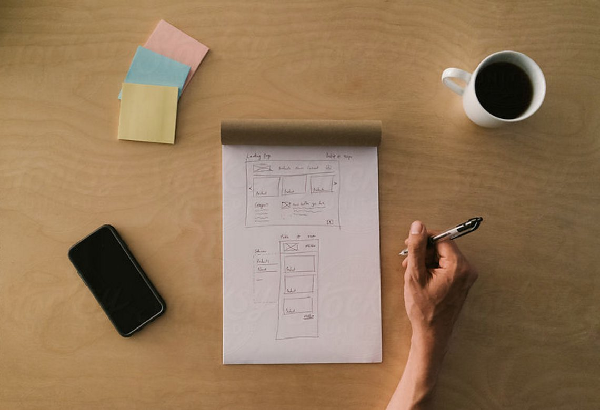
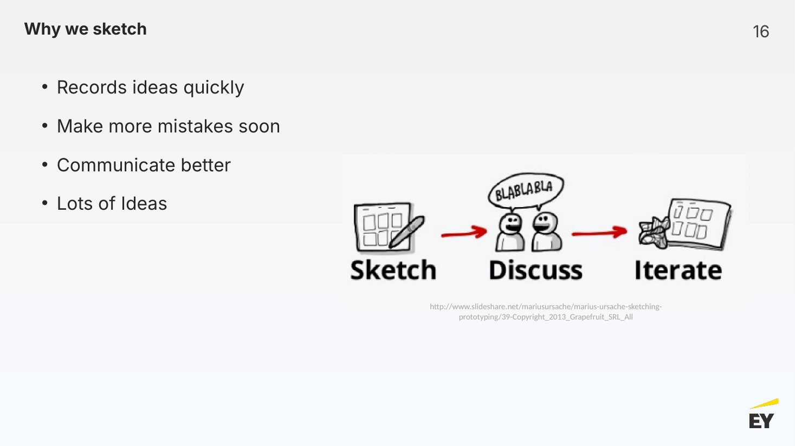
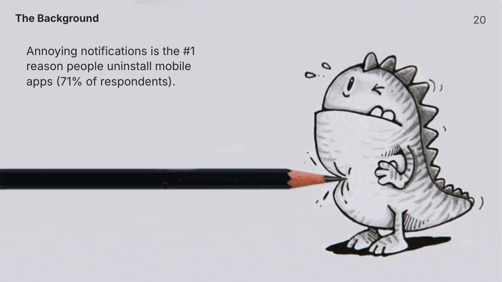
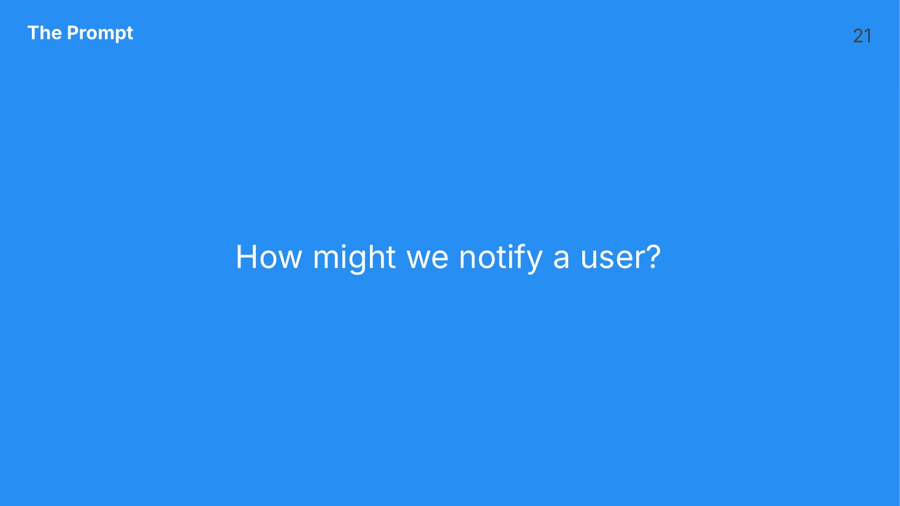
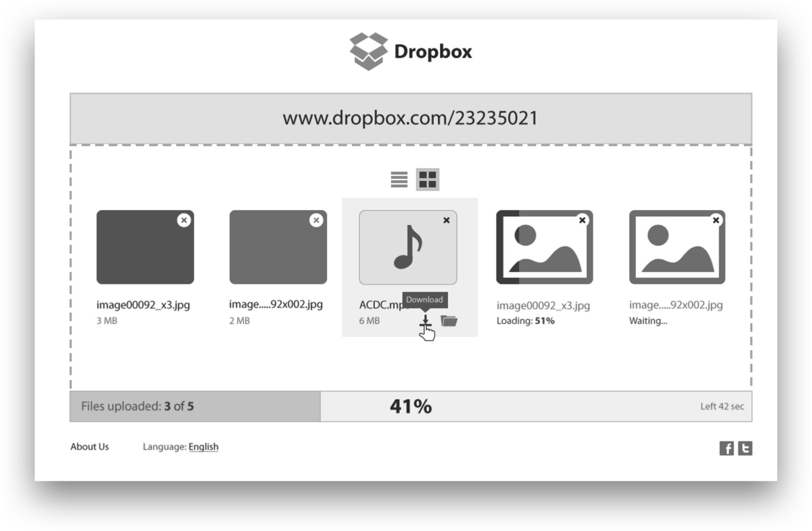
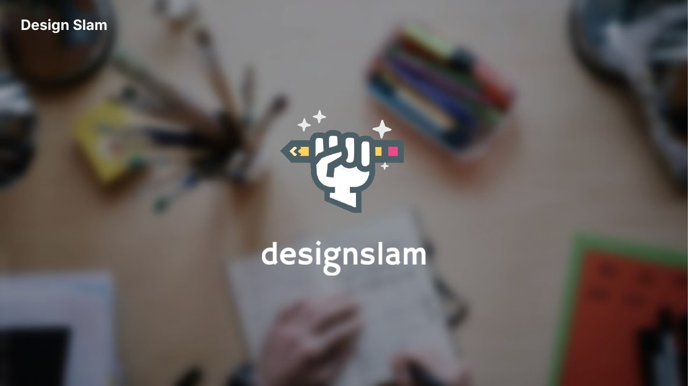

EY hired brilliant consultants straight out of college, but very few had ever designed anything. With my colleagues Racine Davis and Kelcie Wilderman, I co-founded the Design Slam: a hands-on, after-hours design event built on Stanford d.school design thinking, open to anyone at EY who was curious.

Participants should leave having designed something, not just having heard about design.
No prior experience required. Anyone at EY with an interest in design was welcome.
Charlotte and Manhattan had to feel like a single event, sharing the same prompt, timer and critique.
How might we give people with no design background a real taste of the design process, in a single evening?
Understand who you're designing for, their motivations and their problems.
Frame the user's need as a clear problem worth solving.
Generate many possible solutions quickly, before settling on one.
Make ideas tangible through sketching and wireframing.
Put the concept in front of others and learn from their reactions.
We introduced the problem space and the pain points we wanted people to consider, then opened the floor for questions about audience and context.
A single "How might we…" question, given to both offices at the same moment.
One hour to sketch and wireframe a concept. The time limit forced people to form ideas quickly and commit to them.
Each participant presented their work to the group, in the room and over video.
Senior designers critiqued each concept in real time, and the group discussed what worked.
Most participants hadn't drawn since school, so each session opened with a short sketching primer. We explained why designers sketch (to record ideas quickly, make mistakes sooner, communicate better and produce lots of ideas) and broke it down to three building blocks: line, shape and copy.



The critique was where most of the learning happened. Senior designers served as guest judges, and we gave everyone the same five questions to frame their presentation and their feedback. The questions moved the conversation away from "do I like it?" and toward the user and the problem.
Each session ended with a vote on the next month's prompt. After session one, the group chose between registration and onboarding, account information, and list management. Letting participants pick the problem kept them invested and brought them back the following month.

| Program | Detail |
|---|---|
| Sessions delivered | 6, monthly |
| Locations | Charlotte, NC and Manhattan, NY, teleconferenced |
| Audience | Open to anyone at EY |
| Method | Stanford d.school design thinking |
| Feedback | Live critique from senior designers |

People learned more from one hour of sketching than from any amount of explanation. Doing came first, and theory made sense afterward.
The one-hour limit removed the pressure to be perfect. Nobody expected polish, so everybody shipped something.
Giving everyone the same five questions taught them a shared vocabulary for talking about design that they took back to client work.
Voting on the next prompt gave participants ownership and kept the program relevant to the problems they cared about.